Warm full-horizon MPC: initial functional outcomes
Eight complete episodes; seven other selected profile outcomes. Sixteen archives retain the fifteen missing profile attempts plus one earlier nonterminal LV polytope lifecycle. This is issue 943 functional validation; issue 947 timing and exhaustive campaign requirements remain open.
Controller source 9540b8d0; genuine installed SDK producer ab3fdba6. All original horizons, continuous actions and complete source costs are retained. The IPOPT route still uses Python/CasADi orchestration; model/history/cost/geometry are compiled through the C++ bridge. These one-off numerical observations provide no speed ranking, global optimum or nonlinear safety certificate.
The last ten attempts isolate only the numerical worker in 2 GiB memory + 2 GiB swap, with the recording parent outside. Earlier direct runs and the fuel zonotope run use separately disclosed envelopes. OOM, solver limits, geometry allocation stops and unknown lifecycle termination remain distinct. A local Infeasible_Problem_Detected status is not proof that the source control problem is infeasible.
| Original task | Profile | Holds | Outcome | Physical J | Evidence |
|---|---|---|---|---|---|
| syn-nl-lv-01 | direct-ipopt | 30/30 | complete | 0.09206356128 | Raw ZIP · Receipt |
| syn-nl-fuel-01 | direct-ipopt | 40/40 | complete | 0.003834213429 | Raw ZIP · Receipt |
| earth-orbit | direct-ipopt | 20/20 | complete | 65.22966484 | Raw ZIP · Receipt |
| syn-nl-lv-01 | polytope | 0/30 | inconclusive-nonterminal | — | Raw ZIP · Receipt |
| syn-nl-lv-01 | polytope | 0/30 | resource-limited | — | Raw ZIP · Receipt |
| syn-nl-fuel-01 | zonotope | 40/40 | complete | 0.00383421153 | Raw ZIP · Receipt |
| syn-nl-fuel-01 | parallelotope | 40/40 | complete | 0.00384886669 | Raw ZIP · Receipt |
| syn-nl-fuel-01 | ellipsoid | 40/40 | complete | 0.003834213321 | Raw ZIP · Receipt |
| syn-nl-fuel-01 | polytope | 0/40 | resource-limited | — | Raw ZIP · Receipt |
| earth-orbit | box | 12/20 | solver-stopped | — | Raw ZIP · Receipt |
| earth-orbit | zonotope | 0/20 | solver-stopped | — | Raw ZIP · Receipt |
| earth-orbit | parallelotope | 12/20 | solver-stopped | — | Raw ZIP · Receipt |
| earth-orbit | ellipsoid | 0/20 | solver-stopped | — | Raw ZIP · Receipt |
| earth-orbit | polytope | 0/20 | geometry-stopped | — | Raw ZIP · Receipt |
| syn-nl-lv-01 | direct-highs | 30/30 | complete | 0.09206356099 | Raw ZIP · Receipt |
| syn-nl-fuel-01 | direct-highs | 40/40 | complete | 0.003834213481 | Raw ZIP · Receipt |
F/B/I drawings use every available stage from the first query, with intersections formed in full state space before projection. Failed paths end at the last accepted hold; initial-query failures show no executed trajectory. The soft source reference is not a hard terminal set.
syn-nl-lv-01 · direct-ipopt
All original holds, common/tighter numerical replay and rendering complete.
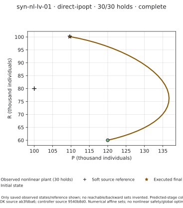
Offline raw attempt and supervisor records · Exact per-member hashes and source identities
syn-nl-fuel-01 · direct-ipopt
All original holds, common/tighter numerical replay and rendering complete.
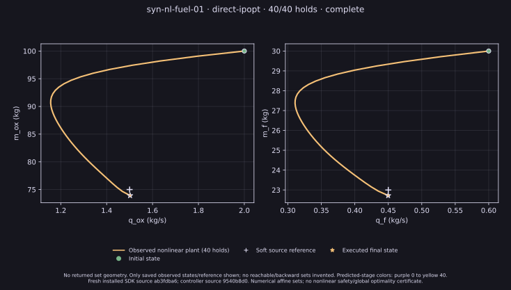
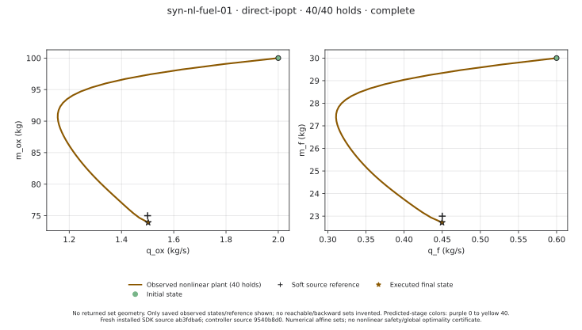
Offline raw attempt and supervisor records · Exact per-member hashes and source identities
earth-orbit · direct-ipopt
All original holds, common/tighter numerical replay and rendering complete.
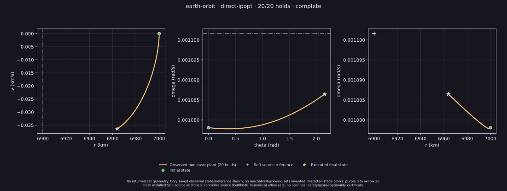
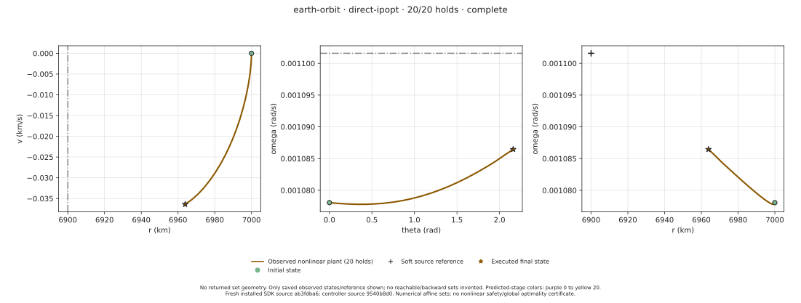
Offline raw attempt and supervisor records · Exact per-member hashes and source identities
syn-nl-lv-01 · polytope
Original LV polytope lifecycle lacks terminal supervisor result; absence of processes does not identify timeout/cancellation/OOM.
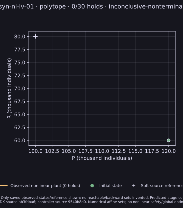
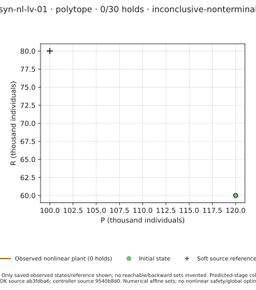
Offline raw attempt and supervisor records · Exact per-member hashes and source identities
syn-nl-lv-01 · polytope
Outer service Result=oom-kill during initial LV polytope query. No native response or inner supervisor terminal receipt; mathematical feasibility not established.
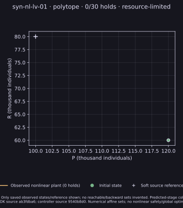
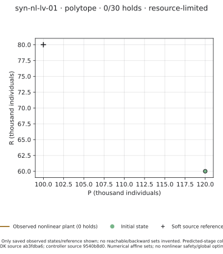
Offline raw attempt and supervisor records · Exact per-member hashes and source identities
syn-nl-fuel-01 · zonotope
All original holds, common/tighter numerical replay and rendering complete.
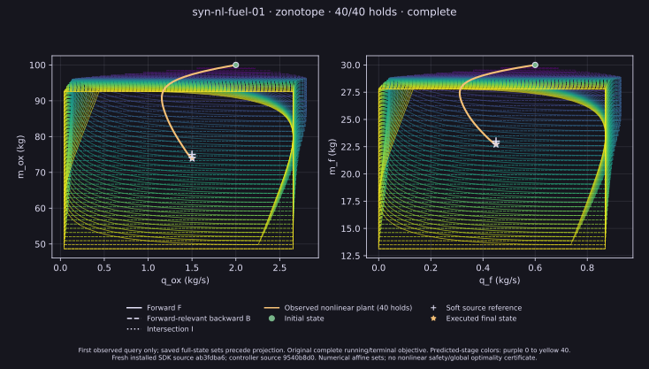
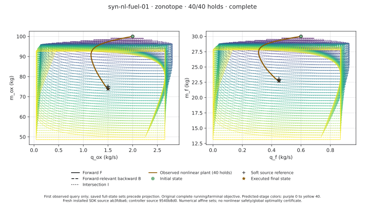
Offline raw attempt and supervisor records · Exact per-member hashes and source identities
syn-nl-fuel-01 · parallelotope
All original holds, common/tighter numerical replay and rendering complete.
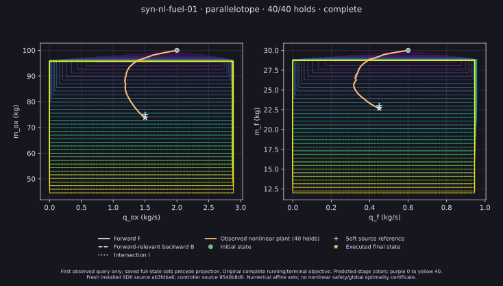
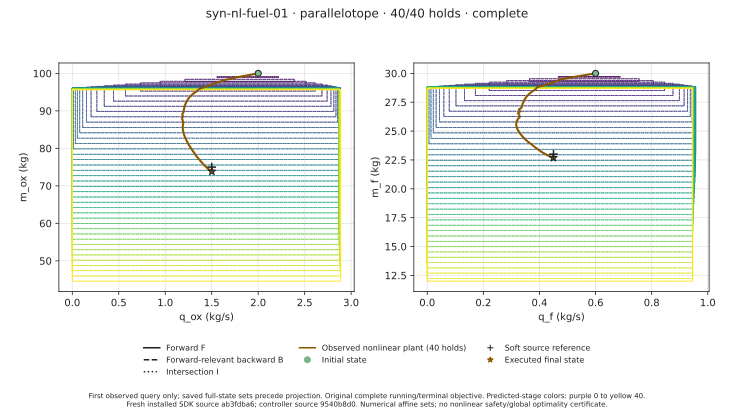
Offline raw attempt and supervisor records · Exact per-member hashes and source identities
syn-nl-fuel-01 · ellipsoid
All original holds, common/tighter numerical replay and rendering complete.
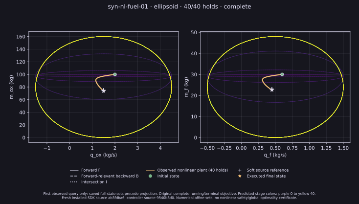
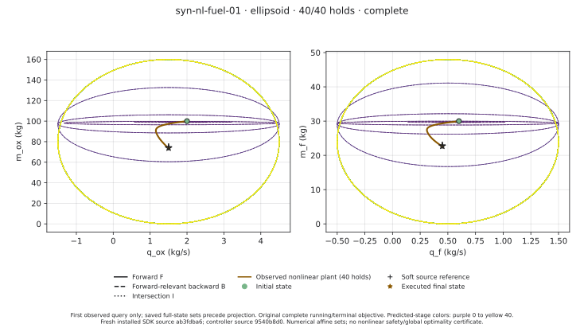
Offline raw attempt and supervisor records · Exact per-member hashes and source identities
syn-nl-fuel-01 · polytope
Numerical worker service Result=oom-kill at its 2 GiB memory/2 GiB swap envelope; no native response. Not infeasibility.
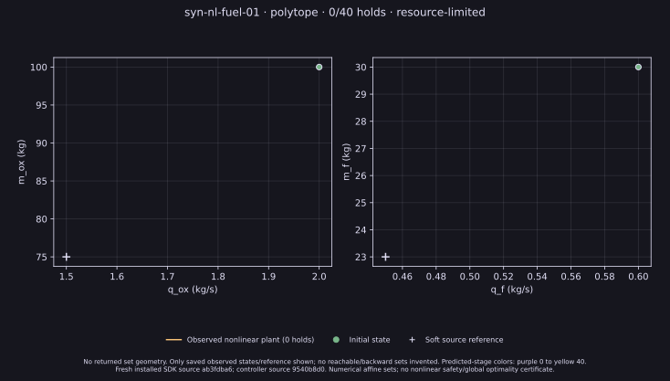
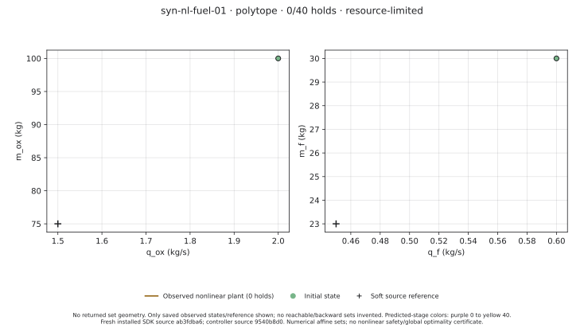
Offline raw attempt and supervisor records · Exact per-member hashes and source identities
earth-orbit · box
IPOPT Infeasible_Problem_Detected at observed query 12. Local solver status, not proof of source infeasibility.
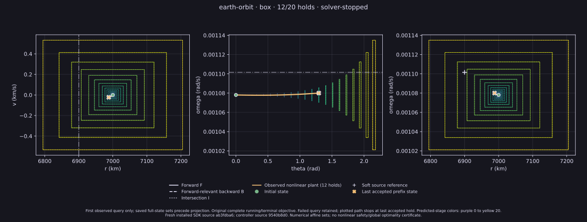
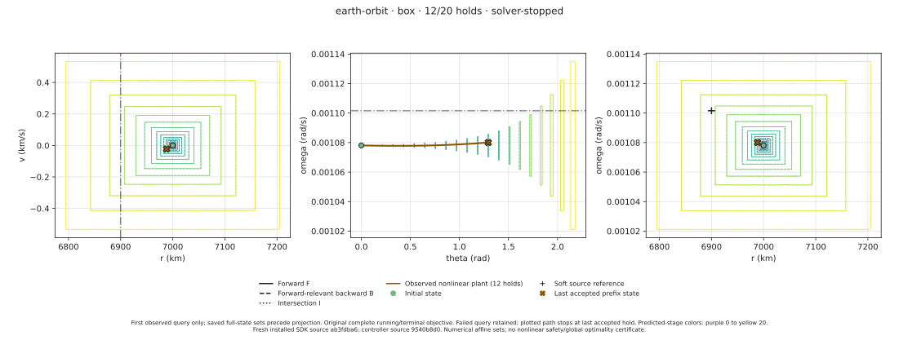
Offline raw attempt and supervisor records · Exact per-member hashes and source identities
earth-orbit · zonotope
IPOPT Maximum_Iterations_Exceeded at observed query 0. Local solver status, not proof of source infeasibility.
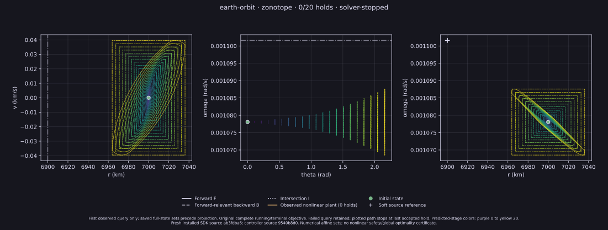
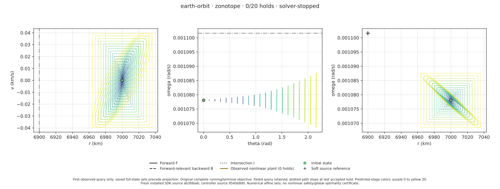
Offline raw attempt and supervisor records · Exact per-member hashes and source identities
earth-orbit · parallelotope
IPOPT Infeasible_Problem_Detected at observed query 12. Local solver status, not proof of source infeasibility.
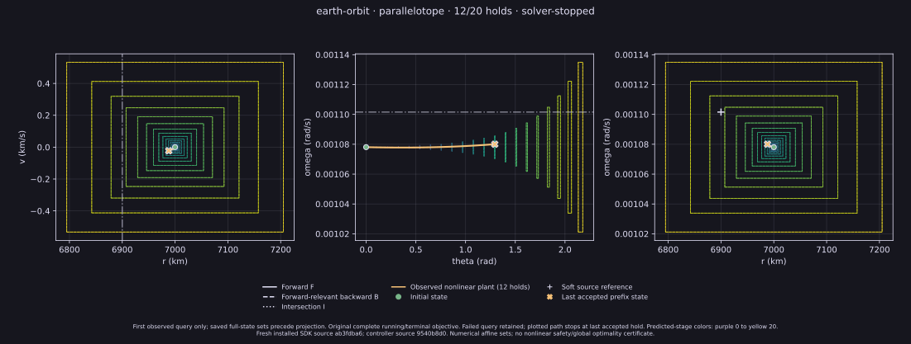
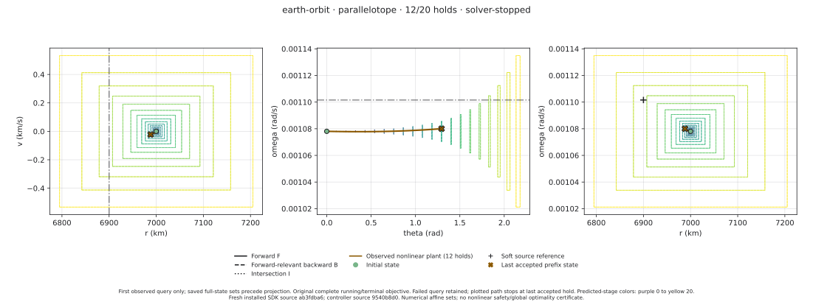
Offline raw attempt and supervisor records · Exact per-member hashes and source identities
earth-orbit · ellipsoid
IPOPT Infeasible_Problem_Detected at observed query 0. Local solver status, not proof of source infeasibility.
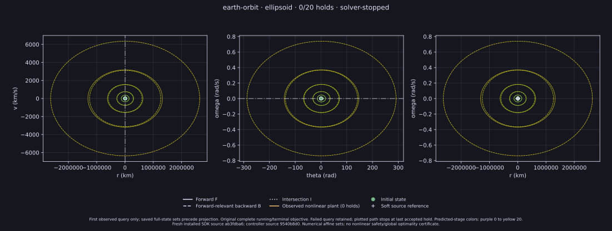
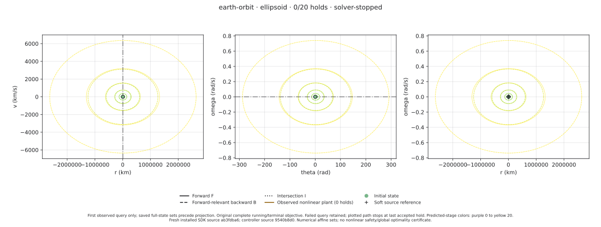
Offline raw attempt and supervisor records · Exact per-member hashes and source identities
earth-orbit · polytope
feedback geometry stopped; partial stage prefix retained
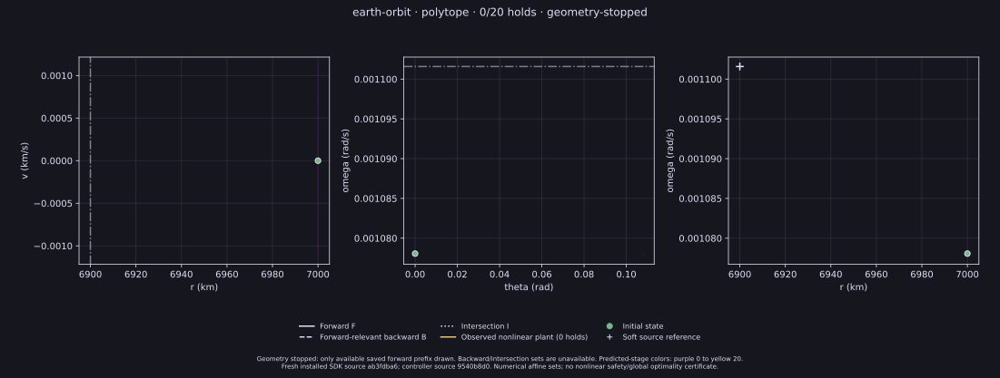
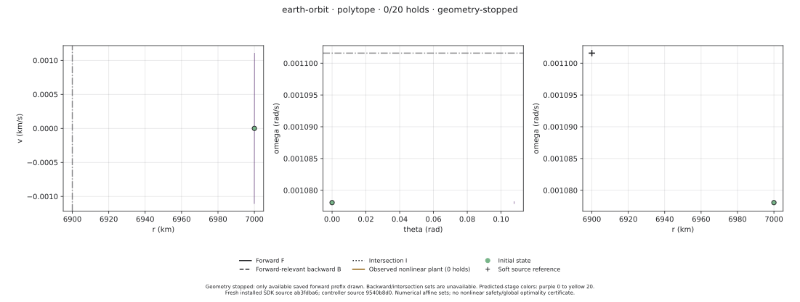
Offline raw attempt and supervisor records · Exact per-member hashes and source identities
syn-nl-lv-01 · direct-highs
All original holds, common/tighter numerical replay and rendering complete.
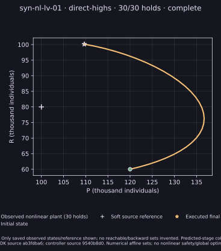
Offline raw attempt and supervisor records · Exact per-member hashes and source identities
syn-nl-fuel-01 · direct-highs
All original holds, common/tighter numerical replay and rendering complete.
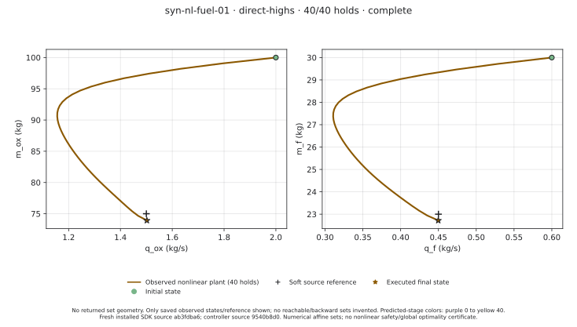
Offline raw attempt and supervisor records · Exact per-member hashes and source identities
Offline figure redraw: python render-source.py --bundle . --output ../warm-gap-preview. This reads saved ZIPs and never executes a controller.
Machine-readable index · SDK/source/configuration receipts · Figure provenance · Offline renderer source